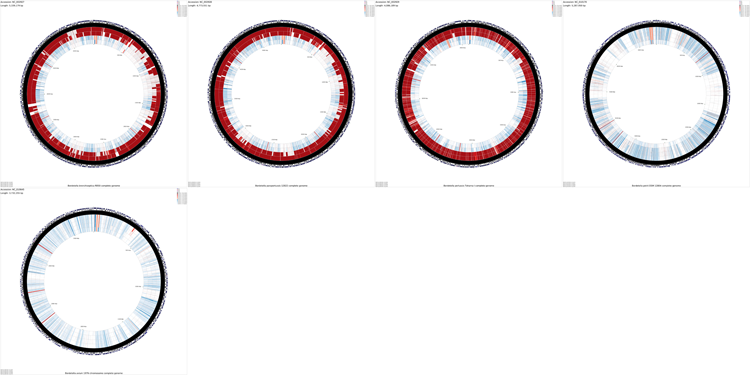
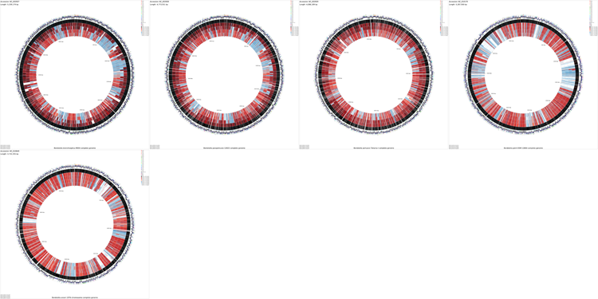

Tutorials
Tutorials
The following tutorials are meant to illustrate all the steps involved in building complex maps for bacterial, chloroplast, and mitochondrial genomes. Note that some of the commands can take several minutes or even hours to complete — to stop a command that is running enter Control-C.
Important: All the commands in each tutorial assume you are in the same directory. For example, if you start tutorial 1 in a directory called tutorial_1, but change directories to edit a configuration file or view an image, you must return to the tutorial_1 directory before issuing the next command in the tutorial.
File types and file extensions: The reference and comparison sequence files used by the CCT commands must end with the appropriate extension. For example, for cgview_comparison_tool.pl, the sequence files can be FASTA (.fasta) or GenBank (.gbk), while for build_blast_atlas.sh or build_blast_atlas_all_vs_all.sh, the sequence files must be GenBank (.gbk). The BLAST comparison types and the 'query_source' and 'database_source' settings section, describes in detail the files types and file extensions used by CCT.
Tutorial 1 - E. coli plasmid comparison
The following tutorial involves comparing the Escherichia coli E24377A plasmid pETEC_35 to other E. coli plasmids.
-
Download the pETEC_35 sequence:
fetch_genome_by_accession.sh -a NC_009787 -o ./
-
Prepare a BLAST atlas project for pETEC_35:
build_blast_atlas.sh -i NC_009787.gbk
This will produce a project directory named after the sequence file name ('NC_009787' in this example). As an alternative, a blank BLAST atlast project could have been created with the '-p' option and a project name. In that case, the NC_009787.gbk file would have to be manually copied to the reference_genome directory.
For details on the BLAST atlas directory structure see Creating a New BLAST Atlas Project. The configuration files (project_settings_cds_vs_cds.conf and project_settings_dna_vs_dna.conf) within the project tree can be edited to change the appearance of the maps (see Customizing CCT maps).
-
Download all E. coli plasmid sequences in GenBank format to the NC_009787/comparison_genomes directory:
fetch_refseq_bacterial_genomes_by_name.sh -n "Escherichia*" --max 1000000 \ -o NC_009787/comparison_genomes/
The '--max' option is used to retrieve sequences less than 1 Mb in length since we are interested in plasmid sequences.
-
To begin the map drawing process using the default configuration enter the build_blast_atlas.sh command again, providing the '-p' option and the path to the project directory:
build_blast_atlas.sh -p NC_009787
These maps should take a few minutes to generate. Once the maps are finished they will be located in the following directories:
NC_009787/maps_for_dna_vs_dna NC_009787/maps_for_cds_vs_cds
On the Linux virtual machine the maps can be viewed by entering the following command and then navigating to the above directories:
geeqie
-
When using numerous comparison genomes it can become difficult to determine which BLAST ring corresponds to which comparison. The blast_divider_ruler customization key can be used to highlight every tenth BLAST comparison ring and to number the BLAST results in the legend (the BLAST legend appears in the bottom left of the map). The entries in the BLAST legend are always given in the same order as the BLAST rings (i.e. the first item in the BLAST legend describes the outermost BLAST ring on the map). The numbering and highlighting added using the blast_divider_ruler customization key make it easier to find the BLAST ring for a comparison of interest. The colour of the highlighted divider rings can be changed using the blastRulerColor customization key (the default colour is orange). See Customization Keys for more information on the keys and values that can be used with the '--custom' option.
To redraw the maps use the following command (note that the existing maps will be overwritten with the new map):
build_blast_atlas.sh -p NC_009787 -x --custom "blast_divider_ruler=T blastRulerColor=rgb(50,205,50)"
The '-x' instructs the program to use the existing BLAST results in the NC_009787 project directory, instead of repeating the entire map creation process.
Sample maps
Tutorial 2 - E. coli genome comparison
The following tutorial involves comparing the genome of E. coli NRG857c (O83:H1) to all other E. coli genomes.
-
Download the NRG857c chromosome sequence:
fetch_genome_by_accession.sh -a CP001855 -o ./
-
Prepare a BLAST atlas project for NRG857c:
build_blast_atlas.sh -i CP001855.gbk
This will produce a project directory named after the sequence file name ('CP001855' in this example). For details on the BLAST atlas directory structure see Creating a New BLAST Atlas Project. The configuration files (project_settings_cds_vs_cds.conf and project_settings_dna_vs_dna.conf) within the project tree can be edited to change the appearance of the maps (see Customizing CCT maps).
-
Download all E. coli chromosome sequences in GenBank format to the CP001855/comparison_genomes directory:
fetch_refseq_bacterial_genomes_by_name.sh -n "Escherichia*" --min 1000000 \ -o CP001855/comparison_genomes/
The '--min' option is used to retrieve sequences greater than 1 Mb in length. This prevents plasmids from being included in the analysis:
-
To begin the map drawing process using the default configuration enter the build_blast_atlas.sh command again, providing the '-p' option and the path to the project directory:
build_blast_atlas.sh -p CP001855
The map creation process can take several hours depending on the number of sequences involved. Once the maps are finished they will be located in the following directories:
CP001855/maps_for_dna_vs_dna CP001855/maps_for_cds_vs_cds
On the Linux virtual machine the maps can be viewed by entering the following command and then navigating to the above directories:
geeqie
-
Examination of the maps reveals a few genome regions that are poorly conserved (at approximately 4.45 Mb and 3.1 Mb for example). To generate zoomed maps showing these regions in more detail, use the following commands:
create_zoomed_maps.sh -p CP001855 -c 4450000 -z 15 create_zoomed_maps.sh -p CP001855 -c 3100000 -z 15
The resulting maps are created alongside the existing maps, in these directories:
CP001855/maps_for_dna_vs_dna CP001855/maps_for_cds_vs_cds
The zoomed versions of the maps are given names to indicate the genome region depicted and the zoom amount. For example, the following map is centered on the 4450000 region and was created using a zoom value of 15:
cds_vs_cds_large_4450000_15.png
The zoomed maps can be created quickly because the analysis results used to generate the maps are not recalculated. Note that the create_zoomed_maps.sh script supports a '--format' option that can be used to specify the output image format (png, jpg, svg, or svgz).
Sample maps
Tutorial 3 - Porphyra purpurea chloroplast genome comparison
The following tutorial involves comparing the Porphyra purpurea chloroplast genome to all RefSeq cholorplast genomes. Note that the final map will show the BLAST results for up to a maximum of 100 genomes. When more than 100 input genomes are provided, only the 100 most similar genomes (as ascertained using BLAST) are displayed (unless the '-b' option of the build_blast_atlas.sh script is used to increase this value).
-
Download the Porphyra purpurea chloroplast genome sequence:
fetch_genome_by_accession.sh -a NC_000925 -o ./
-
Prepare a new BLAST atlas project for the Porphyra purpurea chloroplast:
build_blast_atlas.sh -i NC_000925.gbk
This will produce a project directory named after the sequence file name ('NC_000925' in this example). For details on the BLAST atlas directory structure see Creating a New BLAST Atlas Project. The configuration files (project_settings_cds_vs_cds.conf and project_settings_dna_vs_dna.conf) within the project tree can be edited to change the appearance of the maps (see Customizing CCT maps).
-
Download all chloroplast genome sequences in GenBank format to the NC_000925/comparison_genomes directory:
fetch_all_refseq_chloroplast_genomes.sh -o NC_000925/comparison_genomes/
-
To begin the map drawing process using the default configuration enter the previous command again. In this example the '--custom' option is used to fine-tune the appearance of the map, and the '--map_size' option is used to specify that only 'x-large' maps should be generated (see Customization Keys for more information on the keys and values that can be used with the '--custom' option):
build_blast_atlas.sh -p NC_000925 --map_size x-large \ --custom 'labelFontSize=100 backboneRadius=3000'
The map creation process can take several hours depending on the number of sequences involved. Once the maps are finished they will be located in the following directories:
NC_000925/maps_for_dna_vs_dna NC_000925/maps_for_cds_vs_cds
On the Linux virtual machine the maps can be viewed by entering the following command and then navigating to the above directories:
geeqie
Sample maps
Tutorial 4 - Rattus norvegicus mitochondrial genome comparison
The following tutorial involves comparing the Rattus norvegicus mitochondrial genome to all RefSeq mitochondrial genomes. Note that the final map will show the BLAST results for up to a maximum of 100 genomes. When more than 100 input genomes are provided, only the 100 most similar genomes (as ascertained using BLAST) are displayed (unless the '-b' option of the build_blast_atlas.sh script is used to increase this value).
-
Download the Rattus norvegicus mitochondrial genome sequence:
fetch_genome_by_accession.sh -a AC_000022 -o ./
-
Prepare a new BLAST atlas project:
build_blast_atlas.sh -i AC_000022.gbk
This will produce a project directory named after the sequence file name ('AC_000022' in this example). For details on the BLAST atlas directory structure see Creating a New BLAST Atlas Project. The configuration files (project_settings_cds_vs_cds.conf and project_settings_dna_vs_dna.conf) within the project tree can be edited to change the appearance of the maps (see Customizing CCT maps).
-
Download all mitochondrial genome sequences in GenBank format to the
AC_000022/comparison_genomes directory:
fetch_all_refseq_mitochondrial_genomes.sh -o AC_000022/comparison_genomes/
-
To begin the map drawing process using the default configuration enter the build_blast_atlas.sh command again, providing the '-p' option and the path to the project directory:
build_blast_atlas.sh -p AC_000022
The map creation process can take several hours depending on the number of sequences involved. Once the maps are finished they will be located in the following directories:
AC_000022/maps_for_dna_vs_dna AC_000022/maps_for_cds_vs_cds
On the Linux virtual machine the maps can be viewed by entering the following command and then navigating to the above directories:
geeqie
-
Maps can often be modified to be more visually appealing, by editing the XML file generated by CGView (the program used to draw the maps). For example, to increase the size of the feature labels on the x-large DNA vs DNA map, edit the AC_000022/maps_for_dna_vs_dna/cgview_xml/dna_vs_dna_x-large.xml file with the following change:
Change:
labelFont="SansSerif, plain, 15"
→To:
labelFont="SansSerif, plain, 200"
Make the following optional changes to the file, to make the final map more visually appealing:
Change:
rulerFont="SansSerif, plain, 60"
→To:
rulerFont="SansSerif, plain, 100"
Change:
tickLength="20"
→To:
tickLength="40"
Change:
tickDensity="0.0416666666666667"
→To:
tickDensity="0.08"
Once these changes have been made, save the modified file.
More information on the CGView XML format is available on the CGView website.
Finally, to redraw the maps using the modified XML file, switch back to the cgview_comparison_tool root directory and run the redraw_maps.sh script:
redraw_maps.sh -p AC_000022
The maps can be redrawn relatively quickly because the analyses used to create the XML files are not repeated for redrawing. Note that the redraw_maps.sh script supports a '--format' option that can be used to specify the output image format (png, jpg, svg, or svgz).
Sample maps

{kind=link}
{kind=link}
{kind=link}
{kind=link}
{kind=link}
{kind=link}
{kind=link}
{kind=link}
{kind=link}
{kind=link}
{kind=link}
{kind=link}
{kind=link}
{kind=link}
{kind=link}
{kind=link}
{kind=link}
{kind=link}
{kind=link}
{kind=link}
{kind=link}
{kind=link}
Tutorial 5 - Montage of maps
The following tutorial involves generating a montage of maps comparing several Bordetella sequences.
-
Create a new BLAST atlas all vs all project:
build_blast_atlas_all_vs_all.sh -p montage_project
This will produce a project directory called montage_project. For details on the directory structure see Creating a New BLAST Atlas All vs All Project. The configuration file project_settings_multi.conf within the project tree can be edited to change the appearance of the maps (see Customizing CCT maps).
-
Download Bordetella chromosome sequences in GenBank format into the montage_project/comparison_genomes directory:
fetch_refseq_bacterial_genomes_by_name.sh \ -n "Bordetella*" --min 1000000 -o montage_project/comparison_genomes/
The '--min' option is used to retrieve sequences greater than 1 Mb in length. This prevents plasmids from being included in the analysis:
-
To begin the map drawing process using the default configuration enter the build_blast_atlas_all_vs_all.sh command again, providing the '-p' option and the path to the project directory:
build_blast_atlas_all_vs_all.sh -p montage_project
The creation of a montage map is very time consuming, as a separate CCT map is first created for each sequence. The final montage image is called 'montage.png' and is created in the montage_project directory.
Note that the individual maps comprising the montage can be found in the various project directories located inside of the montage_project/cct_projects directory.
On the Linux virtual machine the montage can be viewed by entering the following command and then navigating to the montage_project directory:
geeqie
-
By default the montage map shows the results of blastn comparisons. To create a montage comparing the translations of CDS features (using blastp), first delete the montage_project/cct_projects directory:
rm -rf montage_project/cct_projects
Next edit the project_settings_multi.conf file in the montage_project directory as follows:
Change:
query_source = nucleotide
→To:
query_source = cds
Change:
database_source = nucleotide
→To:
database_source = cds
To visualize COG functional categories on the maps, make the following additional change:
Change:
cog_source = none
→To:
cog_source = cds
Once these changes have been completed, run the build_blast_atlas_all_vs_all.sh command again to complete the map.
build_blast_atlas_all_vs_all.sh -p montage_project
Sample maps
Montage - DNA (4.8 MB)
{kind=link}
Montage - CDS - after modifying project_settings_multi.conf (6.2 MB)
{kind=link}
Tutorial 6 - Generating a 400 Megapixel map with up to 2500 comparison genomes
The following tutorial involves using CCT to generate a 400 Megapixel map comparing a mitochondrial genome to as many as 2500 other genomes. This tutorial demonstrates the use of the '--custom', '-b', '--memory', and '--map_size' options of the build_blast_atlas.sh script. These options allow maps to be customized without editing the CGView XML files directly (see Customization Keys for more information on the keys and values that can be used with the '--custom' option).
Note: if using the linux virtual machine, first increase the amount of memory allocated to the virtual machine to 2.5 Gb.
-
Download the human mitochondrial genome sequence:
fetch_genome_by_accession.sh -a NC_012920 -o ./
-
Prepare a new BLAST atlas project for the human mitochondrial genome sequence:
build_blast_atlas.sh -i NC_012920.gbk
This will produce a project directory named after the sequence file name ('NC_012920' in this example). For details on the BLAST atlas directory structure see Creating a New Blast Atlas Project. The configuration files (project_settings_cds_vs_cds.conf and project_settings_dna_vs_dna.conf) within the project tree can be edited to change the appearance of the maps (see Customizing CCT maps).
-
Download all mitochondrial genome sequences in GenBank format:
fetch_all_refseq_mitochondrial_genomes.sh -o NC_012920/comparison_genomes/
-
Use the following command to begin the map creation process (note that the map drawing step will fail with a 'java.lang.OutOfMemoryError' if your system has less than 2.5 Gb memory available for this program. If you are using a Linux virtual machine and obtain this error, try increasing the amount of memory allocated to the virtual machine):
build_blast_atlas.sh -p NC_012920 --memory 2500m --max_blast_comparisons 2500 \ --map_size x-large --custom 'width=20000 height=20000 backboneRadius=8000 \ featureThickness=120 rulerFontSize=100 rulerPadding=200 \ tickThickness=15 tickLength=40 draw_divider_rings=F \ _cct_blast_thickness=2.0'
Note that the legend indicating the contents of each BLAST ring will not fit on the map. A list of the comparisons displayed on the map can be obtained from the 'log.txt' files created in the following directories:
NC_012920/cct_projects/cds_vs_cds/ NC_012920/cct_projects/dna_vs_dna/
Sample maps
These maps are very large and may crash your browser. Try downloading them by right-clicking and choosing "Save link as...".
{kind=link}
{kind=link}
Tutorial 7 - Exploring additional CCT functionality
The following tutorial demonstrates several additional capabilities of CCT: custom BLAST databases, labelling a subset of genes, adding additional features, adding additional analysis results, and SVG output. In this tutorial protein sequences from a plasmid are compared to a collection of xylanase sequences using BLAST. A sequence region of interest is marked using a features file, and some hypothetical analysis results are added using an analysis file. Two genes are labelled using a labels_to_show.txt file. Lastly two maps are generated, one in PNG format and one in SVG format.
-
Create a new CCT project called xylanase:
cgview_comparison_tool.pl -p xylanase
-
Download the Clostridium acetobutylicum plasmid pSOL1 sequence to the xylanase/reference_genome directory:
fetch_genome_by_accession.sh -a NC_001988 -o xylanase/reference_genome
-
Create a multi-FASTA file containing known xylanase protein sequences in the xylanase/comparison_genomes directory (see BLAST comparison types for more information on the types of searches that can be performed):
ncbi_search.pl -q 'xylanase[Protein Name]' \ -o xylanase/comparison_genomes/xylanase.faa -d protein -r fasta -v
-
Create a simple text file in the xylanase/features directory describing a single genome region of interest (see adding additional features for more information on feature files):
echo "seqname,source,feature,start,end,score,strand,frame" \ > xylanase/features/region_of_interest.gff echo "interesting region,.,other,119000,124000,.,-,." \ >> xylanase/features/region_of_interest.gff
The above two commands should create a file containing the following text (normally a text editor or spreadsheet program is used to create features files):
seqname,source,feature,start,end,score,strand,frame interesting region,.,other,119000,124000,.,-,.
-
Create a simple text file in the xylanase/analysis directory describing some sequence regions and analysis scores (see adding additional analysis results for more information on analysis files):
echo "seqname,source,feature,start,end,score,strand,frame" \ > xylanase/analysis/analysis_1.gff echo ".,.,.,119000,121000,5,-,." >> xylanase/analysis/analysis_1.gff echo ".,.,.,121000,124000,10,-,." >> xylanase/analysis/analysis_1.gff echo ".,.,.,125000,128000,-10,-,." >> xylanase/analysis/analysis_1.gff
The above commands should create a file containing the following text (normally a text editor or spreadsheet program is used to create analysis files):
seqname,source,feature,start,end,score,strand,frame .,.,.,119000,121000,5,-,. .,.,.,121000,124000,10,-,. .,.,.,125000,128000,-10,-,.
-
Create a file called labels_to_show.txt in the xylanase directory describing which genes should be labelled (see labelling a subset of genes for more information on this file):
echo "xynD, xylanase 1" > xylanase/labels_to_show.txt echo "CA_P0116, xylanase 2" >> xylanase/labels_to_show.txt
The above commands should create a file containing the following text (normally a text editor or spreadsheet program is used to create the labels_to_show.txt file):
xynD, xylanase 1 CA_P0116, xylanase 2
-
Edit the project's configuration file (xylanase/project_settings.conf) using vi or some other text editor. Make the following changes:
Change:
query_source = none
→To:
query_source = cds
Change:
database_source = none
→To:
database_source = proteins
Change:
draw_gc_content = T
→To:
draw_gc_content = F
Change:
draw_gc_skew = T
→To:
draw_gc_skew = F
-
Use the following command to draw the map (see Customization Keys for more information on the keys and values that can be used with the '--custom' option):
cgview_comparison_tool.pl -p xylanase \ --custom 'featureOpacity=1 labelFontSize=50 title=test \ useInnerLabels=false featureThickness=60 backboneRadius=800 \ arrowheadLength=12'
-
To add an SVG version of the map to the project use the redraw_maps.sh script (zoomed SVG maps can be generated using the create_zoomed_maps.sh script):
redraw_maps.sh -p xylanase --format svg
{kind=link}
{kind=link}